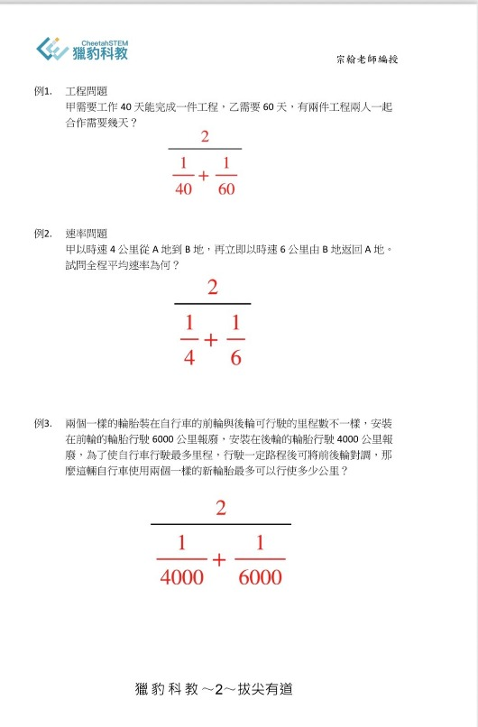

數學解題的「觀念轉移」～獵豹數學的解題課
宗翰老師之前的直播曾提過：
好的解題教學與訓練，包含了知識、結構、技巧、思維模式、視角與高度，要能使學生將習得的觀念延伸、轉化得長遠且多元化！
一般最被詬病的所謂填鴨式機械訓練的解題教學，是一種「短程轉移」。透過公式化的口訣與套路去熟練一堆同質性的問題（甚至只是將同樣形式的問題更換數字），這種訓練只能應付那些「制式僵化」的考試，對於數學觀念的深入、創意的啟發、研究方法的提升根本毫無價值，甚至有害！
「套路、公式、記憶、熟練…」這些低層次立竿見影的、現學現賣的學習方式無法練就舉一反十的「中程轉移」，更別說舉一反百且能另闢新局的「長程轉移」！
學生必須潛心修練、潛移默化，厚積薄發，建立起真正扎實有用的基本功，學習「科學的探索方法」，接受「專家模式」的訓練，一旦有成 ，必是頂尖高手！
這也是獵豹的核心教學理念！
10/2週日早上，宗翰老師在AMC8的考前直播講堂中，示範了一個很經典的「中程轉移」的例子！
下圖中的（例一）是小學高年級常見的一道「工程問題」，宗翰老師透過專家模式中的「類比模式」，將（例三）「類比轉移」，讓同學們恍然大悟 原來兩題的觀念完全一致，瞬間秒解！
宗翰老師留下了（例二）當作業，讓同學們想想為何這道題也是同樣的「類比」：調和平均數！
宗翰老師精彩的解說 宛若暗室明燈，啟發孩子的智慧，更指明了學習之道！
另外,之前宗翰老師一文,
～談教學的過度擬合～
一起來看看為何越針對性的訓練或方式，適用的範圍便越窄！
短期來看，最有效率的訓練方式，就長期來看卻可能是最沒效率的學習方法。
https://www.facebook.com/groups/695697124716309/permalink/1045454166407268/
※索取宗翰老師AMC8直播講座回放+筆記,請按讚留言,私訊星媽喔!
https://www.facebook.com/groups/695697124716309/permalink/1141180506834633/
